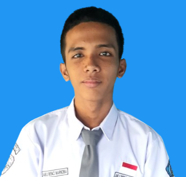

📍 SMKN 1 Pangkajene dan Kepulauan | ⚙️ IT & Network Enthusiast
Saya adalah siswa SMK jurusan Teknik Komputer dan Jaringan yang berfokus pada infrastruktur jaringan, pemeliharaan sistem perangkat keras maupun lunak, dan pengembangan teknologi berbasis web. Memiliki disiplin tinggi dalam bekerja dan antusias terhadap pemecahan masalah (problem-solving) di industri IT.
Memiliki rekam jejak akademik yang progresif dan aktif berkompetisi di luar sekolah:
🏆 Juara 1 Expo Web & Coding Andalan Camp 2025
Tingkat Provinsi (Pare-pare, Sulawesi Selatan)
📅 17 - 19 Desember 2025
Menunjukkan kompetensi unggul dalam pengembangan web dan pemrograman di tingkat regional.
Tertarik untuk mendiskusikan sistem jaringan atau peluang kolaborasi di bidang IT?
Kirim Email